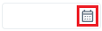
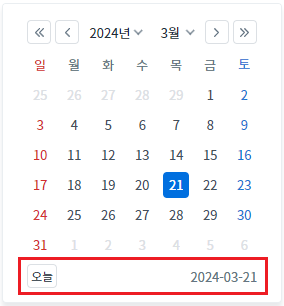
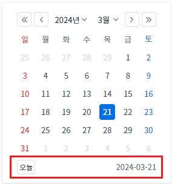
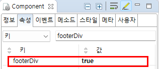

InputCalendar의 'footerDiv' 속성을 사용하여 브라우저에 렌더링될 때, 달력의 하단 영역을 'div' 또는 'table' 태그로 설정한 예제입니다. 이 속성은 달력 아이콘을 클릭하여 달력이 생성될 때 하단 영역을 구성할 태그를 설정할 수 있습니다.(달력의 하단 영역은 오늘 날짜를 선택할 수 있는 버튼과 선택된 날짜 문자열이 표시됩니다.) 이 속성의 기본 설정은 'table' 태그로 생성되는 것입니다.
속성의 설정 값에 따른 기능은 다음과 같습니다.
true: 'div' 태그로 구성합니다.
false: [default] 'table' 태그로 구성합니다.
달력의 하단 영역을 'table' 태그로 구성하기
달력의 하단 영역을 'div' 태그로 구성하기
1
STEP 1: 달력 아이콘을 클릭합니다.
예제 영역 "(기본 설정 값) 달력의 하단 영역을 'table' 태그로 구성하기"에 구성된 InputCalendar의 달력 아이콘을 클릭합니다.Image 1.브라우저(Chrome) 실행 예시 - 캘린더 아이콘

2
STEP 2: 실행된 결과를 확인합니다.
달력의 하단 영역을 브라우저 개발자 도구의 Elements(요소) 탭을 통해 확인합니다. 하단 영역이 'table'로 구성된 것을 확인할 수 있습니다.
Image 2.브라우저(Chrome) 실행 예시 - 달력의 하단 영역 확인

Example 1.브라우저에 렌더링된 HTML 구조
<table class="w2calendar_footer"> <tbody> <tr> <td> <div class="w2calendar_go_today" role="button" title="현재일" tabindex="0"></div> </td> <td> <div id="mf_wq_uuid_15_calendar_currentDate" class="w2calendar_footer_date">2024-03-21</div> </td> </tr> </tbody> </table>
1
STEP 1: 달력 아이콘을 클릭합니다.
예제 영역 "달력의 하단 영역을 'div' 태그로 구성하기"에 구성된 InputCalendar의 달력 아이콘을 클릭합니다.Image 3.브라우저(Chrome) 실행 예시 - 캘린더 아이콘
2
STEP 2: 실행된 결과를 확인합니다.
달력의 하단 영역을 브라우저 개발자 도구의 Elements(요소) 탭을 통해 확인합니다. 하단 영역이 'div'로 구성된 것을 확인할 수 있습니다.
Image 4.브라우저(Chrome) 실행 예시 - 달력의 하단 영역 확인

Example 2.브라우저에 렌더링된 HTML 구조
<div class="w2calendar_footer"> <div class="w2calendar_go_today w2calendar_go_today_div" role="button" title="현재일" tabindex="0"></div><span id="mf_wq_uuid_20_calendar_currentDate" class="w2calendar_footer_date w2calendar_footer_date_div">2024-03-21</span> </div>
1
InputCalendar의 속성을 정의합니다.
[필수] footerDiv="true"
(옵션 설명)
- true: 달력의 하단 영역을 'div' 태그로 구성합니다.
- false: [default] 달력의 하단 영역을 'table' 태그로 구성합니다.
Image 5.웹스퀘어 스튜디오의 Component View - 속성 설정 예시

Example 3.Source
<!-- inputCalendar 의 소스 본문 예시 --> <w2:inputCalendar footerDiv="true"> </w2:inputCalendar>
footerDiv